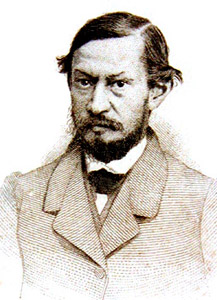

Antônio Gonçalves Dias

Gonçalves Dias foi um dos maiores poetas da primeira geração romântica do Brasil. Foi patrono da cadeira 15 na Academia Brasileira de Letras (ABL). É autor da obra Canção do Exílio, sendo uma das suas obras mais emblemáticas. Lembrado como poeta indianista, ele escreveu sobre temas relacionados à figura do índio. Além de poeta, ele foi jornalista, advogado e etnólogo.